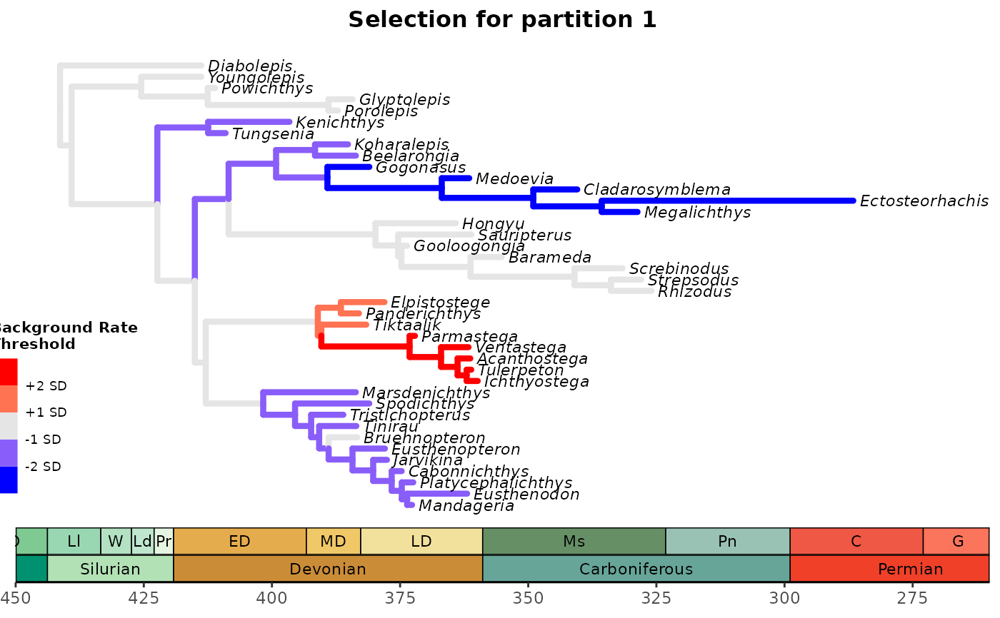

Plot Bayesian evolutionary tree with rate thresholds for selection mode
plot_treerates_sgn.RdPlots the summary Bayesian evolutionary tree with branches, according to user-defined thresholds (in units of standard deviations) used to infer the strength and mode of selection.
Usage
plot_treerates_sgn(type = c("MrBayes", "BEAST2"),
tree, posterior,
trans = c("none", "log", "log10"),
summary = "mean", drop.dummyextant = TRUE,
clock = 1, threshold = c("1 SD", "2 SD"),
low = "blue", mid = "gray90", high = "red",
branch_size = 2, tip_size = 2,
xlim = NULL, nbreaks = 10, geo_size = list(2, 3),
geo_skip = c("Quaternary", "Holocene", "Late Pleistocene")))Arguments
- type
Whether to use data output from "Mr.Bayes" or "BEAST2".
- tree
A
tidytreeobject; the output of a call totreeio::read.beast. Summary trees from Mr. Bayes will include branch specific rates for all clock partitions, and the partition to be plotted will be specified using the "clock" argument. On the other hand, BEAST2 will output one separate summary tree file for each clock partition. For the latter, the tree file for the partition of interest should be provided for plotting.- posterior
A data frame of posterior parameter estimates (log file). From Mr.Bayes, it includes a "clockrate" column indicating the mean (background) clock rate estimate for each generation that will be used for pairwise t-tests. Such data frame can be imported using
combine_log(no need to reshape from wide to long). See theposterior1porposterior3pdatasets for an examples of how the input file should look. From BEAST2, it will include at least one "rate<filename>.mean" column indicating the mean (background) clock rate estimate for each generation. If there are "P" unlinked clock partitions in BEAST2, there will be P x "rate<filename>.mean" columns (one for each partition) in the posterior log file.- trans
Type of data transformation to perform on background rates extracted from the posterior log file from Mr. Bayes or BEAST2. Options include "none" (if rates are normally distributed), natural log transformation "log", and log of base 10 transformation "log10". The necessity of using data transformation can be tested using the function
plot_back_rates.- summary
The rate summary stats chosen to calculate selection mode. Only rates "mean" and "median" are allowed. Default is "mean".
- drop.dummyextant
logical; whether to drop the "Dummyextant" tip (if present) from the tree before plotting the tree. Default isTRUE.- clock
The clock partition number to calculate selection mode. Ignored if only one clock is available.
- threshold
A vector of threshold values. Default is to display thresholds of ±1 relative standard deviation (SD) of the relative posterior clock rates. Should be specified as a number of standard deviations (e.g.,
"1 SD") or the confidence level for a confidence interal around the mean relative posterior clockrate (e.g.,"95%"). Multiple values are allowed to produce a plot with multiple thresholds. Set toNULLto omit thresholds.- low, mid, high
Colors passed to
scale_color_steps2to control the colors of the branches based on which thresholds are exceeded. When no thresholds are supplied, usemidto control the color of the tree.- branch_size
The thickness of the lines that form the tree.
- tip_size
The font size for the tips of the tree.
- xlim
The x-axis limits. Should be two negative numbers (though the axis labels will be in absolute value, i.e., Ma).
- nbreaks
The number of interval breaks in the geological timescale.
- geo_size
The font size for the labels in the geological scale. The first value in
list()is the font size for geological epochs and the second value is for geological periods. Passed directly to thesizeargument ofdeeptime::coord_geo.- geo_skip
A vector of interval names indicating which intervals should not be labeled. Passed directly to the
skipargument ofdeeptime::coord_geo.
Details
Plots the phylogentic tree contained in tree using ggtree::ggtree. Branches undergoing accelerating evolutionary rates (e.g., >"1 SD", "3 SD", or "5 SD" relative to the background rate) for each morphological clock partition suggest directional (or positive) selection for that morphological partition in that branch of the tree. Branches undergoing decelerating evolutionary rates (e.g., <"1 SD", "3 SD", or "5 SD" relative to the background rate) for each morphological clock partition suggest stabilizing selection for that morphological partition in that branch of the tree. For details on rationale, see Simões & Pierce (2021).
Please double check that the distribution of background rates (mean rates for the tree) sampled from the posterior follow the assumptions of a normal distribution (e.g., check for normality of distribution in Tracer). Otherwise, displayed results may not have a valid interpretation.
References
Simões, T. R. and S. E. Pierce (2021). Sustained High Rates of Morphological Evolution During the Rise of Tetrapods. Nature Ecology & Evolution 5: 1403–1414.
See also
vignette("rates-selection") for the use of this function as part of an analysis pipeline.
ggtree::ggtree, deeptime::coord_geo
Examples
# See vignette("rates-selection") for how to use this
# function as part of an analysis pipeline
## MrBayes example
# Load example tree and posterior
data("tree3p")
data("posterior3p")
plot_treerates_sgn(
type = "MrBayes",
tree3p, posterior3p, #MrBayes tree file with data for all partitions
trans = "none",
summary = "mean", #MrBayes specific argument
drop.dummyextant = TRUE, #MrBayes specific argument
clock = 1, #Show rates for clock partition 1
threshold = c("1 SD", "3 SD"), #sets background rate threshold for selection mode
branch_size = 1.5, tip_size = 3, #sets size for tree elements
xlim = c(-450, -260), nbreaks = 8, geo_size = list(3, 3)) #sets limits and breaks for geoscale

if (FALSE) {
## BEAST2 example
tree_clock1 <- system.file("extdata", "Penguins_MCC_morpho_part1", package = "EvoPhylo")
tree_clock1 <- treeio::read.beast(tree_clock1)
posterior <- system.file("extdata", "Penguins_log.log", package = "EvoPhylo")
posterior <- read.table(posterior, header = TRUE)
plot_treerates_sgn(
type = "BEAST2",
tree_clock1, posterior, #BEAST2 tree file with data for partition 1
trans = "log10",
clock = 1, #Show rates for clock partition 1
threshold = c("1 SD", "3 SD"), #sets background rate threshold for selection mode
branch_size = 1.5, tip_size = 3, #sets size for tree elements
xlim = c(-70, 30), nbreaks = 8, geo_size = list(3, 3)) #sets limits and breaks for geoscale
}